오늘 보여 줄 다섯 가지 방법과 준비물
이 영상은 AI로 건축 도면을 그리는 다섯 가지 방법을 실제 작업 화면으로 보여 줘요. 발표자는 예전에 AI 도면 강의 제안을 받았지만, 그때는 자신이 없어 다른 강사를 소개하고 거절했대요. 지금은 실무에서 직접 써 보니 말로 도면을 그리는 게 정말 된다고 느꼈다고 해요.
모든 방법의 바탕은 같아요. Claude Code를 가운데 두고, 여기에 이미지 생성 서비스와 라이노(Rhino)를 MCP로 이어 둬요. 사람은 말이나 스케치로 지시하고, Claude가 그 지시를 받아 연결된 프로그램을 직접 움직여요.
영상은 연결이 이미 끝났다고 가정하고 시작해요. 연결 방법은 채널의 다른 영상과 PDF(Portable Document Format) 자료로 안내하는데, 그 자료의 한 장이 잠깐 비쳐요. 라이노 명령창에 MCP 서버가 돌고 있다는 메시지가 뜨면 연결이 된 거예요. 빨간 화살표가 그 메시지를 가리켜요.
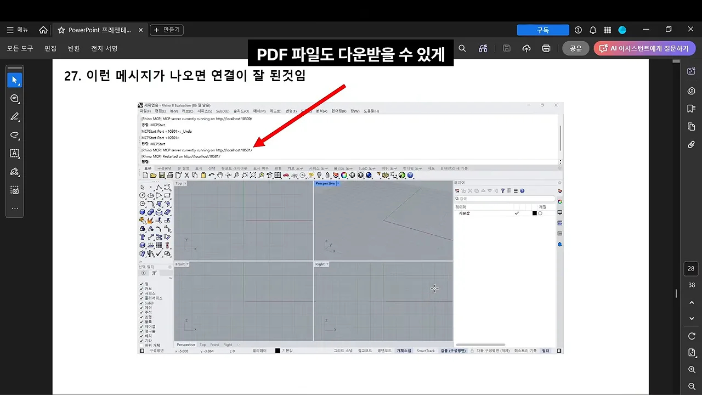
방법 1 — 말로 이미지 도면 만들기
첫 번째 방법은 말로 바로 이미지 도면을 만드는 거예요. 이미지 생성은 Gemini나 ChatGPT에서 해도 되고, Runway나 Higgsfield 같은 플랫폼을 써도 돼요. 발표자는 Higgsfield를 골랐어요.
Higgsfield를 Claude Code에 붙이기
Higgsfield 홈페이지 위쪽 메뉴에 플러그인 항목이 있어요. 들어가면 'GENERATE IMAGES & VIDEOS IN CLAUDE CODE WITH CLI'라는 안내와 함께 Claude Code에 붙여 넣을 설치 문구가 나와요. 이걸 복사해 Claude Code에 붙여 넣고 엔터를 치면, Claude가 알아서 Higgsfield MCP를 설치해요.
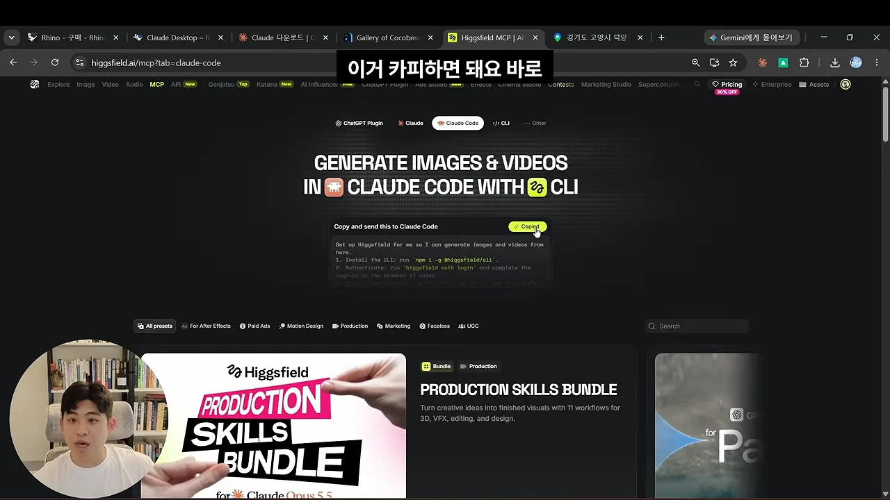
한 줄 지시로 네 장 받기
요청은 한 줄이었어요. 화면의 빨간 밑줄 친 말풍선이 그 지시예요. 그 아래 'Higgsfield의 위젯 generate_image'가 두 번 찍힌 걸 보면, Claude가 Higgsfield의 이미지 생성 도구를 실제로 불렀다는 걸 알 수 있어요. 이미지 모델은 GPT(Generative Pre-trained Transformer) Image 2를 쓰라고 했어요.
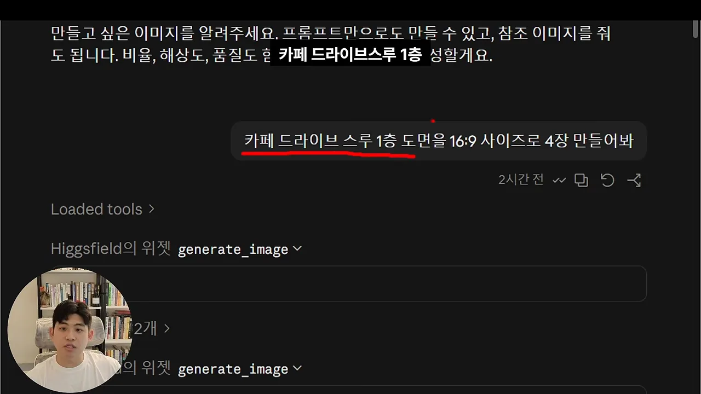
Claude는 결과 네 장을 표로 정리해 줬어요. 1번은 건물을 감싸는 한 줄 차로의 단독 건물, 2번은 코너 대지, 3번은 도로를 따라 긴 대지, 4번은 중정이 있는 대형 매장이에요. 오른쪽 열에는 각 안의 장단점이 있어요. Claude 스스로 1번이 네 장 중 완성도가 가장 높다고 했어요.
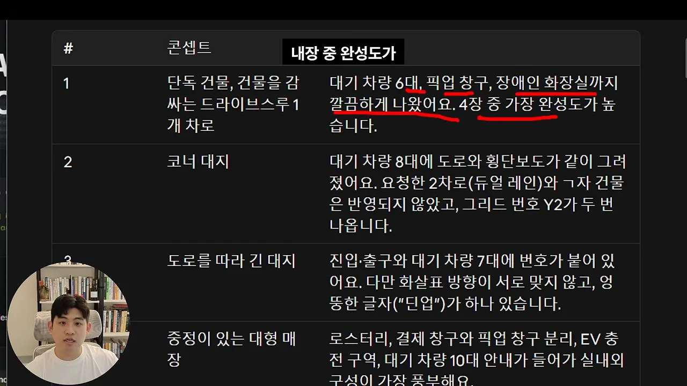
도면처럼 보이지만 동선이 말이 안 돼요
발표자는 1번 이미지 위에 빨간 펜으로 차가 가는 길을 따라 그려요. 진입해서 메뉴판에서 주문하고, 결제와 픽업을 거쳐 빠져나가는 흐름 자체는 맞아요. 운전석이 왼쪽이니 주문 위치도 맞고요. 하지만 주방에서 픽업 창구까지 갈 길이 없고, 결제 창구에는 일할 사람이 없어요. 장애인 화장실은 아예 건물 밖에 놓였어요.
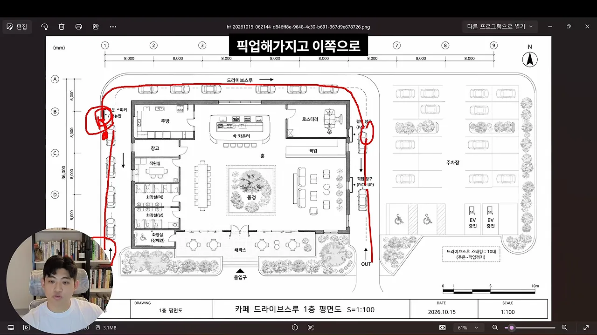
다른 안도 마찬가지예요. 2번은 차가 들어갔다 다시 뒤로 돌아오고, 화장실에는 입구가 없어요. 3번은 진입로가 없고, 운전석이 왼쪽인데 주문 메뉴판이 오른쪽에 있어요. 여자 화장실을 지나야 남자 화장실에 들어가는 구조도 있어요. 4번은 차량 동선은 깔끔하지만, 아래 화면처럼 창고와 화장실이 손님 자리에서 바로 보여요. 직원실로 들어갈 길도 막혀 있어서 발표자가 복도를 하나 그려 넣어요.
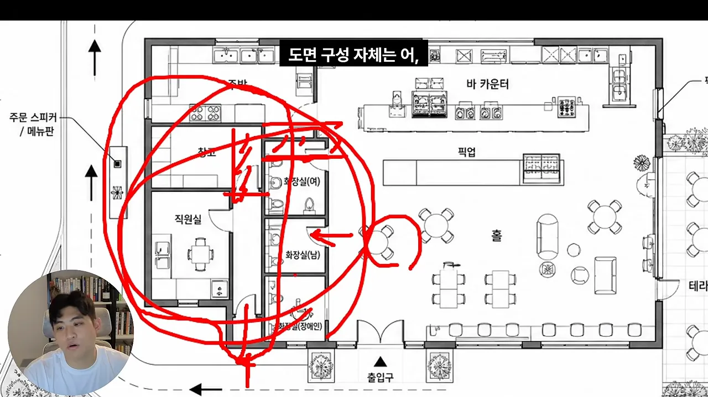
그래도 MCP를 거친 쪽이 훨씬 나아요
발표자는 이 결과도 그나마 잘 나온 거라고 말해요. 비교하려고 Higgsfield 웹에 직접 '드라이브 스루 커피 매장의 1층 도면을 그려줘'라는 한 줄만 넣어 봤어요. 아래 생성 창에 모델이 GPT Image 2로 같다는 게 보여요. 결과는 라벨이 전부 영어이고, 그림자처럼 뭉개지고, 한 장에는 평면도와 입면도가 섞였어요.
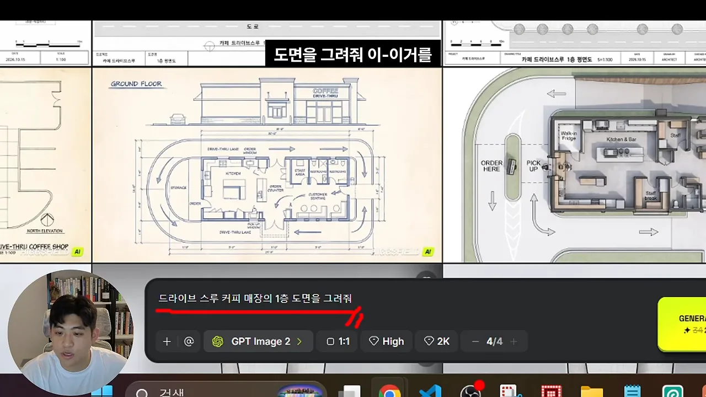
차이는 프롬프트에 있어요. MCP로 요청했을 때는 Claude(Opus)가 한 줄 지시를 받아 아주 긴 영어 프롬프트로 다시 써서 넘겼어요. 오른쪽 정보 창의 빨간 원 안이 그 프롬프트예요. 'clean professional CAD-style 2D orthographic top-down drawing' 같은 도면 조건이 줄줄이 들어 있어요.
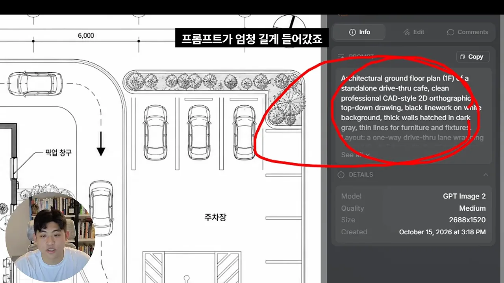
방법 2 — 말로 라이노에 CAD 도면 그리기
두 번째 방법은 같은 한 줄 지시를 이미지 대신 라이노에 직접 그리게 하는 거예요. 앞의 이미지를 따라 하지 않도록 '이미지 생성 결과와는 상관없이 너의 생각으로'라는 말을 앞에 붙였어요. 화면 아래쪽을 보면 Claude가 A~D 네 가지 콘셉트를 먼저 정하고, 라이노용 도면 생성 스크립트를 짜서 그려 넣었다고 보고해요.
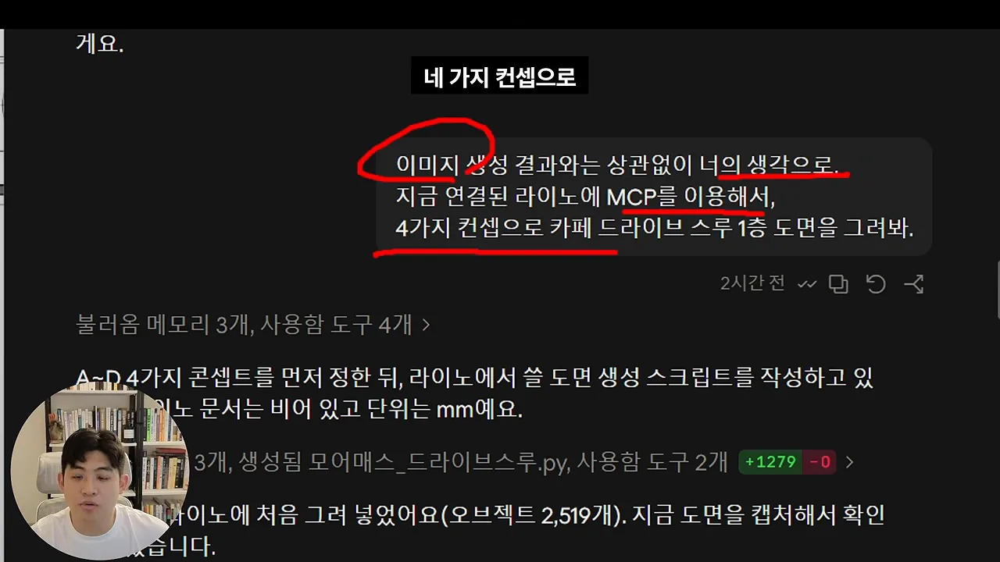
A안 '순환 광장형'은 매장을 차로가 감싸고 돌아요. 위쪽에서 메뉴보드로 주문하고, 왼쪽에 튀어나온 픽업창에서 받아요. 매장 앞에는 광장과 테라스가 있어요. 발표자가 오른쪽 주차장 옆에 빨간 줄을 그은 곳이 문제예요. 걷는 사람과 차가 서로 엇갈리는 자리라서요. 그래도 실 배치에 막힌 방이 없고 동선도 이어져서 말은 되는 설계라고 봐요.
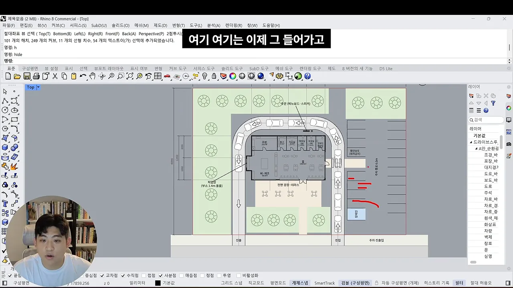
B안 '전면주차 후면 차로형'은 주차를 앞에, 차로를 뒤에 뒀어요. 큰 실 하나 안으로 바·제조, 주방, 창고, 직원실이 이어져서 오히려 자연스럽다고 해요. 주차장과 보행로가 따로 나뉘어 보차분리도 완벽하게 됐어요. 발표자는 네 안 중 이게 더 좋다고 말해요.
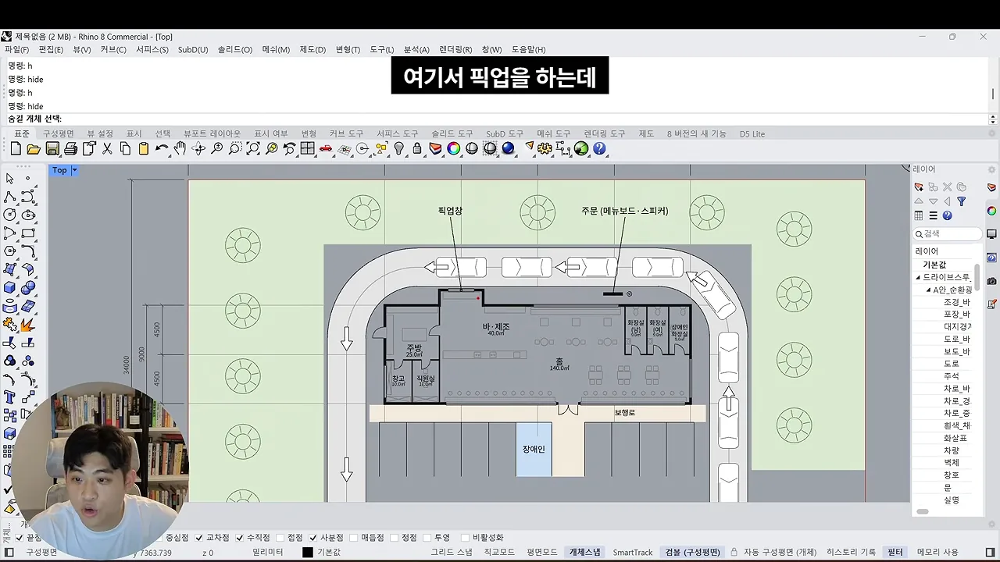
C안 '코너 듀얼 레인형'은 차로가 두 줄이라 주문을 두 곳에서 받아요. 화면 위쪽 '주문 2곳 (1열·2열)'이 그거예요. 빨간 원이 친 '합류(교대 진입)' 부분이 어색해요. 두 줄로 들어와 한 줄로 나가야 하는데, 그냥 빠져나가는 차도 생기거든요. 홀을 옆에서 널찍하게 들이고 창을 잘 낸 건 좋지만, 한쪽은 보차분리가 안 됐어요.
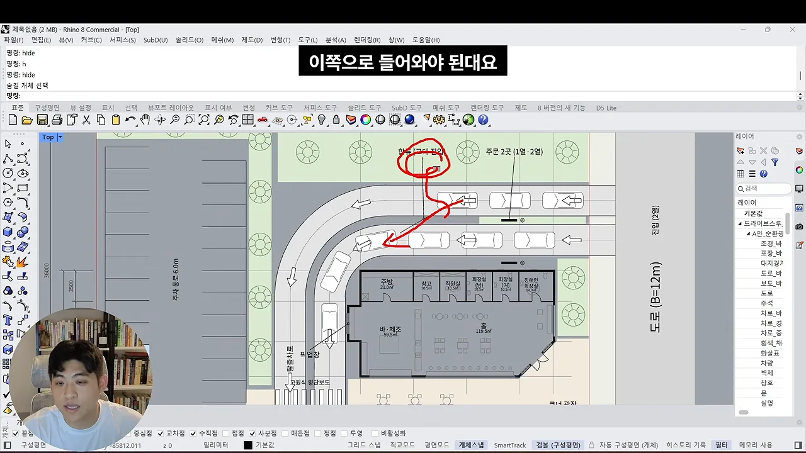
D안 '중정형 플래그십'은 가운데 중정을 둔 큰 매장이에요. 확대한 화면에서 왼쪽 탈출차로 옆에 결제창과 픽업창이, 안쪽에 주방·베이커리와 바·제조가 붙어 있어요. 로스터리는 밖에서 보여 양쪽에서 눈길을 끌고, 북측 전실로 주차장에서 들어와요. 발표자는 직원실 쪽에 문 하나만 더 내면 그대로 써도 괜찮다고 봐요.
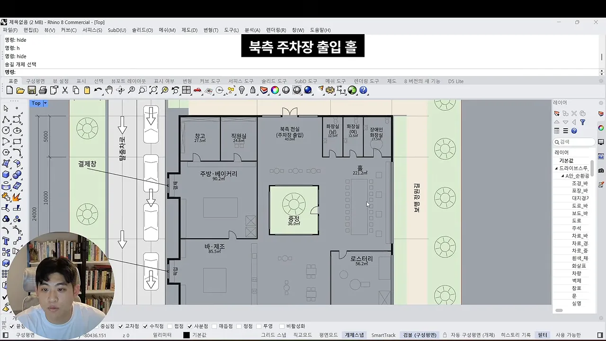
| 안 | 구성 | 발표자의 평가 |
|---|---|---|
| A 순환 광장형 | 차로가 매장을 감싸고 앞에 광장 | 보행자와 차가 엇갈리고 화장실이 홀에서 보여요. 그래도 말은 돼요 |
| B 전면주차 후면 차로형 | 주차는 앞, 차로는 뒤 | 보차분리가 완벽해요. 가장 좋은 안이에요 |
| C 코너 듀얼 레인형 | 두 줄 차로, 주문 두 곳 | 합류가 어색하고 한쪽은 보차분리가 안 됐어요 |
| D 중정형 플래그십 | 중정과 로스터리를 둔 큰 매장 | 동선이 깔끔해요. 직원실 문 하나만 손보면 돼요 |
정리하면 같은 한 줄 지시였는데도, 라이노에 그리게 한 쪽이 이미지 생성보다 설계를 더 잘했어요. 발표자도 이유는 모르겠다면서 결과만 놓고 그렇게 판단해요.
방법 3 — 사례 도면과 지번으로 설계시키기
세 번째 방법은 참고할 사례 도면을 주고, 실제 땅의 지번까지 알려 준 뒤 라이노에 설계하게 하는 거예요. 사례는 건축 사례 사이트 Archello에서 찾았어요. 발표자가 예전 영상에서 ArchDaily 대신 쓰기 좋다고 소개한 곳이에요.
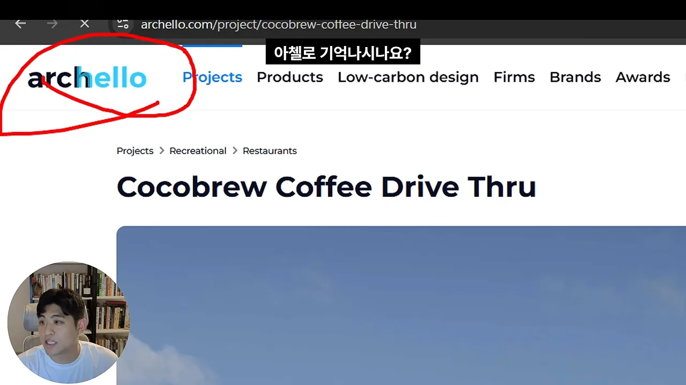
페이지를 내려가면 평면도가 있어요. 발표자가 빨간 선으로 따라 그린 게 차의 길이에요. 들어와서 주문하고, 넘어가서 픽업한 뒤 크게 돌아 나가요. 이 정도 회전 반경이 있어야 차가 돈다는 걸 보여 주는 도면이에요. 매장 자체는 아주 작아요.
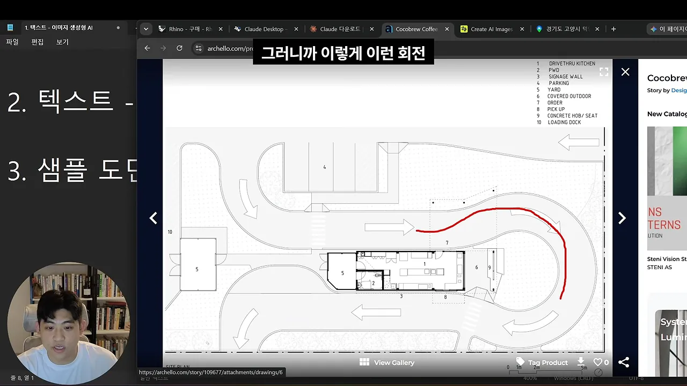
대지는 경기 고양시 덕양구 향동동 446이에요. 지도 앱의 위성 사진에 빨간 핀이 꽂힌 곳으로, 옆 도로가 꽤 넓어요. 발표자는 일부러 긴 땅을 골랐어요.
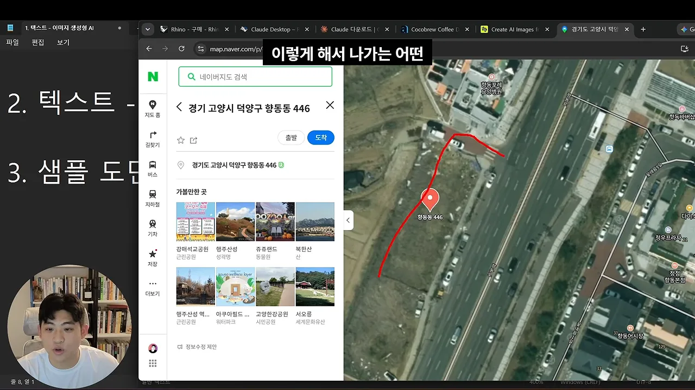
지시는 이랬어요. 밑줄 친 말풍선을 보면 앞서 만든 4개 도면은 지우지 말고 두라는 말까지 넣었어요. Claude는 '기존 VWorld 도구로 주소 좌표와 지적도를 불러오겠다'고 답해요. 지적도는 VWorld를 연결해 두면 불러올 수 있다고 발표자가 덧붙여요.
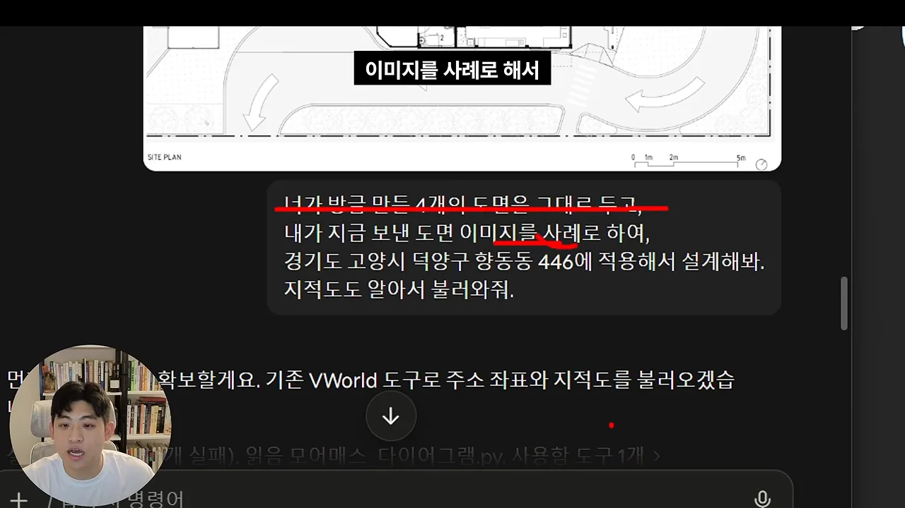
사례에서 가져온 것과 대지에 맞춰 바꾼 것
Claude는 결과를 두 묶음으로 나눠 설명했어요. 먼저 사례에서 가져온 것이에요. U턴 루프 차로 두 줄 사이에 폭 7.8m의 좁고 긴 매장동을 두고, 진입 쪽 면에서 대면 주문, 루프를 돈 뒤 반대 면에서 픽업해요. 주문창과 픽업창 사이가 약 37m라 그동안 음료를 만들 시간이 생겨요. 발표자는 사례 도면을 그대로 읽어 냈다며 놀라요.
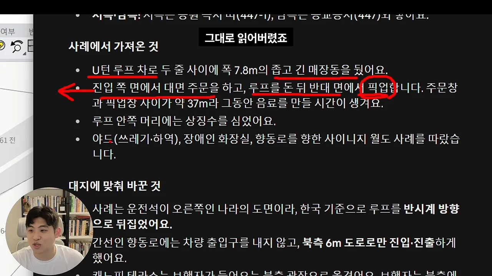
다음은 대지에 맞춰 바꾼 것이에요. 사례는 운전석이 오른쪽인 나라의 도면이라, 한국 기준으로 루프를 반시계 방향으로 뒤집었어요. 간선인 향동로에는 차량 출입구를 내지 않고 북측 6m 도로로만 드나들게 했어요. 발표자는 큰길로 바로 나가는 건 위험하니 아주 잘한 판단이라고 해요. 캐노피 테라스는 보행자가 들어오는 북측 광장으로 옮겨, 걷는 사람이 차로를 건너지 않게 했어요.
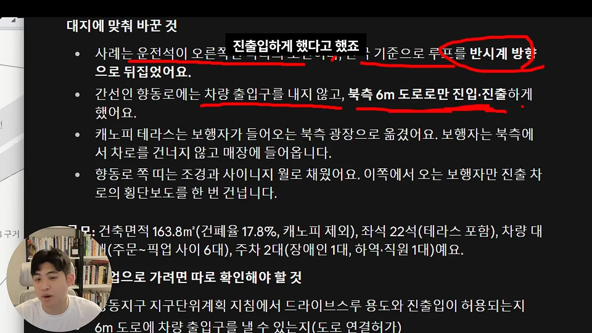
Claude는 실제 사업으로 가려면 따로 확인할 것도 짚었어요. 향동지구의 지구단위계획 지침에서 드라이브스루 용도와 진출입이 허용되는지, 6m 도로에 차량 출입구를 낼 수 있는지 봐야 해요. 드라이브스루 교통 검토도 필요하고, 대지 안의 기존 건물은 철거된다고 가정했어요.
도면을 확대하면 루프 안쪽 머리에 상징수가 있고, 루프 반지름이 차로 중심 기준 6m로 맞춰져 있어요. 발표자가 가장 크게 놀란 대목이에요. 매장 폭과 도로 폭에도 치수가 하나하나 붙어 있어요.
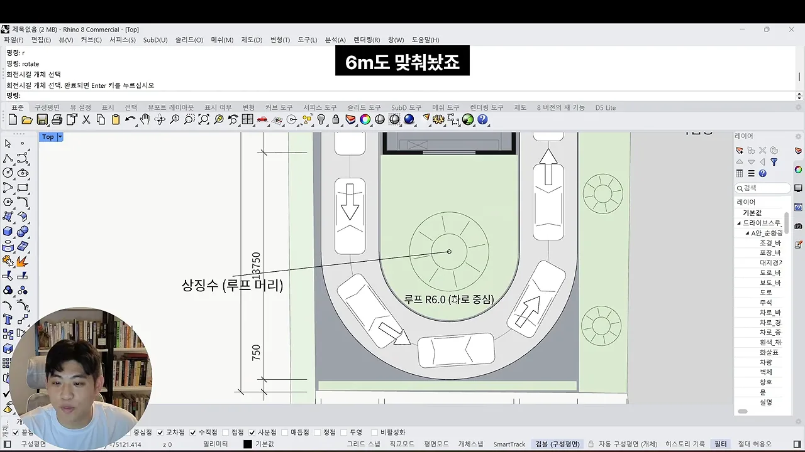
방법 4 — 치수까지 말로 불러 주며 그리기
네 번째 방법은 스케치 없이 말로만, 치수까지 하나하나 불러 주며 그리는 거예요. 이번 대상은 드라이브스루가 아니라 상가 안에 있는 작은 카페 인테리어예요. 발표자는 지도 앱에 올라온 실제 카페 사진을 보며 시작해요. 출입구로 들어오면 앞에 긴 바가 있고, 그 뒤에 커피 머신이 놓이고, 돌아 들어가면 좌석이 있는 구조예요.
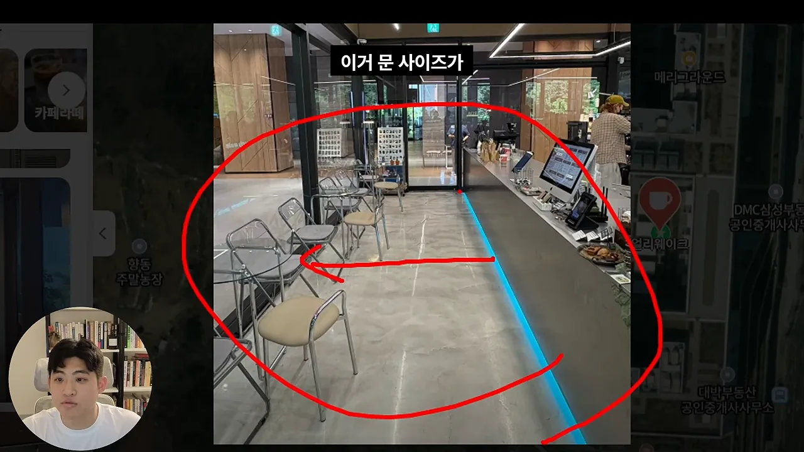
발표자는 사진을 보며 머릿속으로 치수를 잡아요. 통로 2,000에 작업대 800을 세 개, 뒤쪽 공간 4m를 더하면 8.5m가 나와요. 그래서 8.5m×8.5m 공간을 같이 설계해 보자고 하고, 외벽 경계부터 그려 달라고 해요.
외벽부터 한 겹씩
Claude는 8.5m를 벽 안쪽 면 기준인 안목치수로 보고, 실내 면적 72.25㎡로 그렸어요. 경계벽은 RC(Reinforced Concrete) 200mm로 가정했어요. 오른쪽 답변 끝에는 '상가 전면이 어느 쪽인지, 기둥이 있는지' 같은 질문을 되묻고, 그리는 스크립트 파일 이름도 알려 줘요.
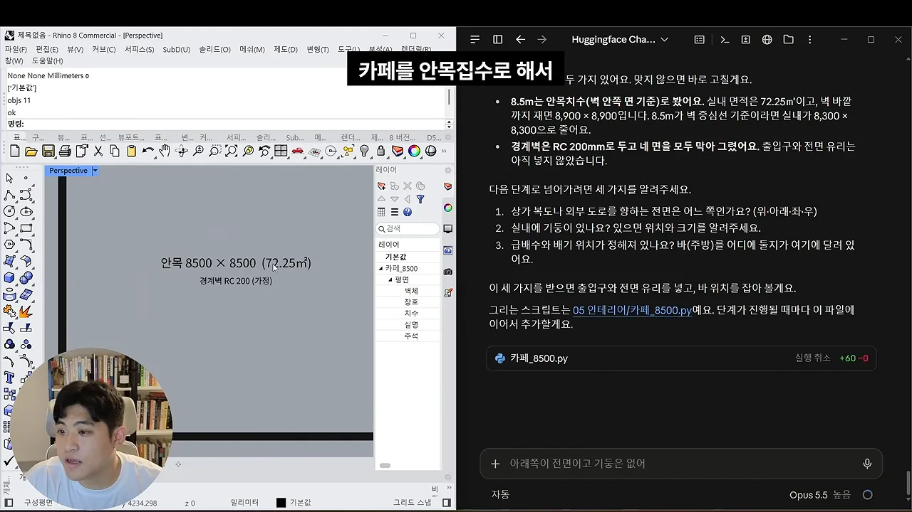
이어서 서쪽과 북쪽은 전부 유리창, 북쪽 가장 왼쪽에 출입문, 남쪽은 테라스, 동쪽은 콘크리트 벽이라고 알려 줘요. 첫 결과는 테라스 쪽이 유리로 안 바뀌어 있었어요. 그래서 남쪽은 전부 폴딩도어, 테라스 깊이는 3m, 출입문은 1,000짜리 커튼월 다음 칸이라고 고쳐 말해요. 화면을 보면 북측은 '고정창 1,000, 출입문 1,000(바깥 여닫이), 나머지 6,500은 고정창'으로 다시 그려졌어요.
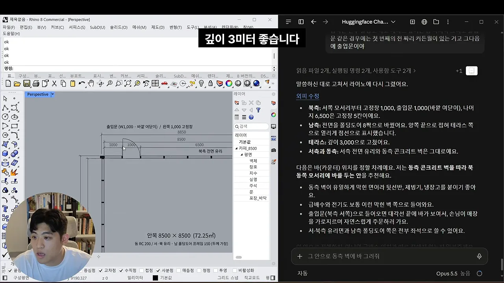
참고로 이 화면의 Claude는 바를 동쪽 콘크리트 벽에 붙이자고 추천했어요. 막힌 벽이라 급배수와 장비를 붙이기 좋다는 이유예요. 발표자는 그 제안 대신 처음 사진처럼 출입구 쪽 복도를 따라 바를 길게 두는 쪽으로 밀고 가요.
레이아웃을 치수로 불러 주기
다음 지시가 이 방법의 핵심이에요. 출입문으로 들어가면 2m 복도, 그 옆으로 손님이 커피를 받는 800 테이블, 그 오른쪽에 800 작업 공간, 다시 그 오른쪽에 커피 머신을 올리는 800 테이블이 있다고 말해요. 남측 테라스 쪽으로는 1m 통로를, 오른쪽 위에는 2m×2m 창고를 두라고 해요. 테이블은 빼고 레이아웃부터 그리라고 했어요. 말한 치수만으로 그리면 이런 평면이 돼요.
실제 결과 화면도 같아요. 오른쪽 표에 복도 2,000, 픽업 테이블·작업 공간·커피머신 테이블 각 800, 남측 통로 1,000, 창고 2,000×2,000, 남은 동측 영역 약 4,100이 정리돼 있어요. 발표자는 그 위에 빨간 펜으로 1인석과 테이블 자리를 그려 보며 다음 지시를 구상해요.
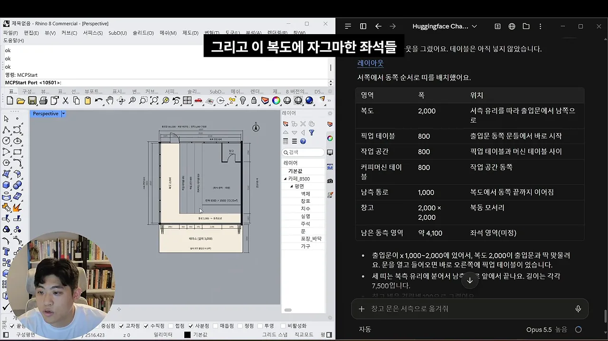
가구 넣고 PDF로 뽑기
가구 지시도 말로 해요. 창고는 가로 3,000으로 늘리고 문을 서쪽으로 옮기게 해요. 픽업 테이블 아래쪽에는 POS(Point of Sale), 출입구 쪽 끝에는 핸드드립 자리를 둬요. 커피머신 테이블에는 머신, 우유 스팀기, 믹서기를 올려요. 복도에는 유리벽을 따라 1인석 세 개, 왼쪽 구석에는 스피커를 둬요. 좌석 영역과 테라스에는 4인석 테이블을 네 개씩 넣고, 테라스는 다른 색 해치로 구분하라고 했어요.
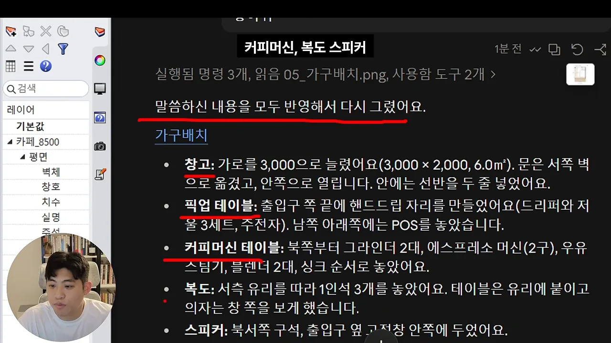
1인석 의자가 엉뚱한 방향이라, 의자를 위아래로 놓고 의자처럼 보이게 더 자세히 그리라고 고쳐요. 그리고 인테리어 상담에 쓰려고 PDF로 만들어 달라고 해요. 완성된 PDF는 세로 한 장에 평면 전체가 들어간 상담용 도면이에요.
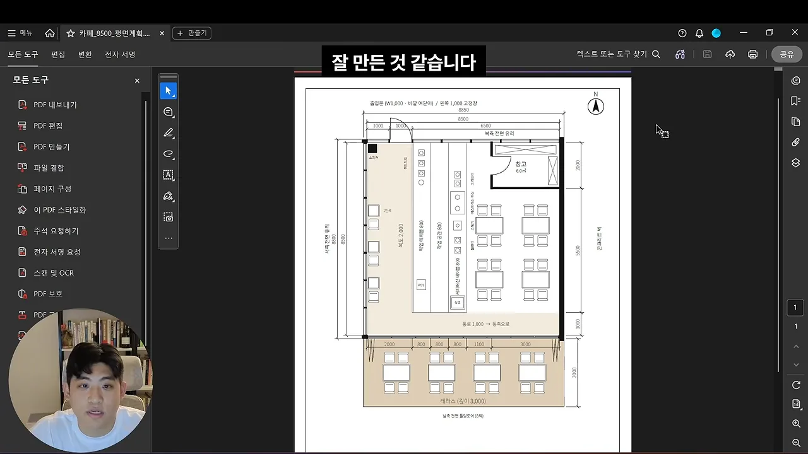
방법 5 — 스케치 한 장에 설명 곁들이기
다섯 번째 방법은 텍스트에 스케치를 더하는 거예요. 발표자는 말보다 그림을 주는 게 훨씬 편하다고 해요. 화면에 빨간 펜으로 대충 네모를 그리고, 문, 바, 1인석, 4인석 테이블과 의자, 폴딩도어, 테라스, 창고 선반을 그려 넣어요. 설명하고 싶은 곳에는 번호를 붙였어요. 위쪽 동그라미 1, 2, 3과 왼쪽 아래 4예요.
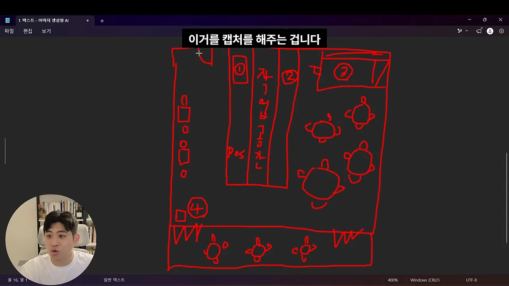
이 스케치를 캡처해서 새 세션에 붙여 넣어요. 앞 작업과 섞이지 않게 라이노도 새 파일로 열고 MCP를 다시 켜요. 그리고 한 번에 길게 설명해요. 전체 8.5m×8.5m, 서쪽과 북쪽은 유리창, 문은 1m예요. 1번은 핸드드립 공간, 2번은 커피 머신·믹서기·제빙기·싱크대를 올리는 테이블, 3번은 창고, 4번은 스피커예요. 남쪽은 폴딩도어로 깊이 3m의 테라스가 있고 4인석 네 개가 놓여요. 출입구 쪽에는 폭 2m에 1인석 세 개, 테라스 쪽으로 1m 통로, 그 오른쪽 좌석 영역에 4인석 네 개가 있어요.
기억을 가져와 버린 첫 결과
그런데 같은 폴더에서 작업하다 보니, Claude가 앞서 만든 카페 작업물을 참고해 버렸어요. 진행 목록 첫 줄이 '메모리·기존 평면 스크립트 확인'이에요. 발표자가 빨간 원으로 감싼 곳이에요. 결과도 이전 모델링을 거의 그대로 가져왔어요.
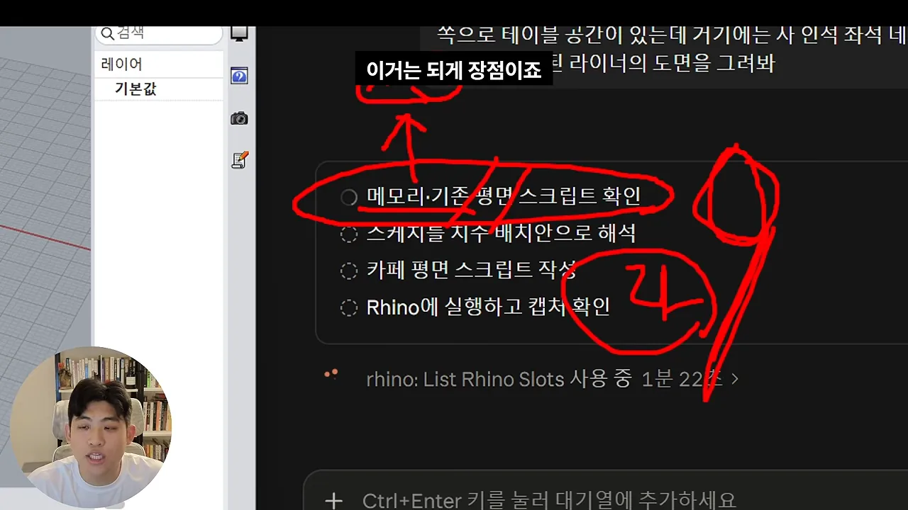
발표자는 기존 기억을 활용하는 건 장점이라고 봐요. 그래도 이번엔 비교가 목적이라 '전혀 참고하지 말고 내가 준 정보만으로 그려 봐'라고 다시 시켜요. Claude는 예전 스크립트를 되돌려 두고 새 스크립트를 짰어요. 그리고 스스로 그린 결과를 캡처해 보고, 드리퍼·머신 원을 가린 흰 채움, 문과 겹친 라벨, 원형 테이블에 너무 붙은 의자를 찾아 고쳤어요.
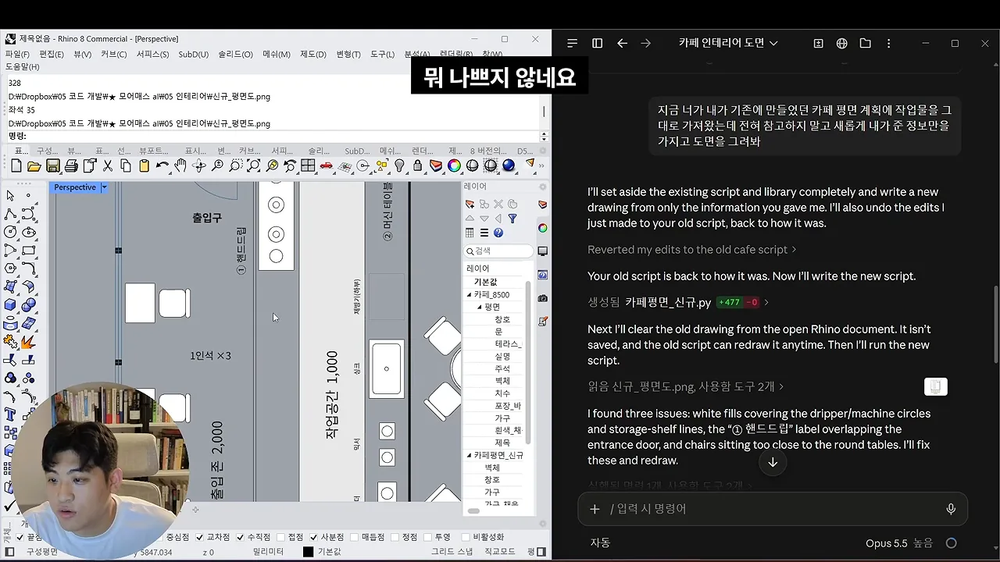
고칠 때도 그림 한 장
새 도면은 스케치대로 원형 테이블을 썼어요. 창고는 3,000×1,600으로 넣었고, 폭을 알려 주지 않은 곳은 700·1,000·700처럼 알아서 채웠어요. 발표자는 나쁘지 않다고 평가해요. 1인석 의자 방향만 남았는데, 이번에는 말 대신 그림으로 고쳐요. 결과 화면 위에 의자를 직접 그려 캡처하고, '1인석 좌석 의자는 위아래로 배치해 줘' 한 줄을 붙여요.
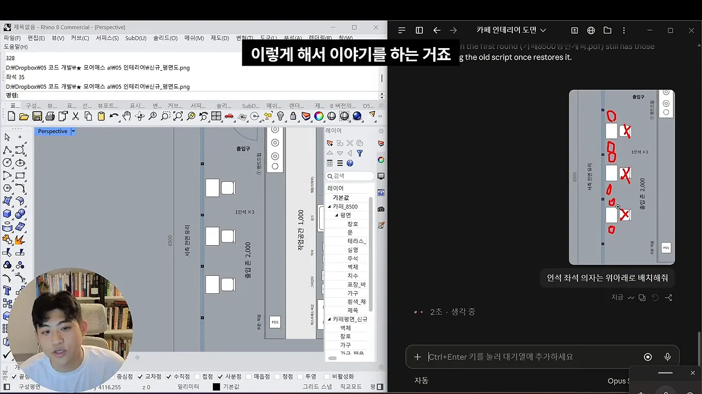
직접 이미지 플러스 텍스트로 줄 때가 가장 완벽한 수정을 해낸다는 거죠.
— 영상 26:29
다섯 방법을 나란히 놓고 보면
의자는 한 번에 위아래로 바뀌었어요. 최종 화면 오른쪽에 처음 그린 빨간 스케치가, 왼쪽에 라이노 평면이 나란히 있어요. 출입구 쪽 1인석, 가운데 세 줄 테이블, 원형 4인석 네 개, 테라스의 4인석 네 개까지 스케치의 배치가 그대로 도면이 됐어요.
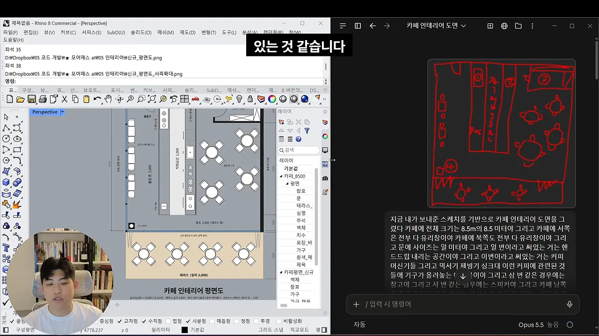
발표자는 다섯 번째 방법이 과정도 가장 짧았다고 말해요. 머릿속 생각을 한 번에 쭉 말로 풀고, 스케치 한 장만 주면 되니까요. 그 말도 키보드로 치지 않고 음성 인식으로 했어요. 화면에 '3m야'처럼 말투가 그대로 찍힌 게 그 때문이에요. 도면을 그릴 줄 모르거나 라이노를 못 다뤄도 CAD 도면을 만들 수 있어요. 라이노를 잘 다루는 사람에게도 아이디어 단계의 속도가 크게 빨라져요. 발표자는 말이 곧 도면이 되는 과도기를 지금 건축 설계 실무가 지나고 있다고 봐요.
| 방법 | 주는 것 | 그리는 곳 | 영상에서 본 결과 |
|---|---|---|---|
| 1. 텍스트 → 이미지 | 한 줄 지시 | Higgsfield (GPT Image 2) | 도면처럼 보이지만 실내 동선이 엉망이에요. Claude가 쓴 긴 프롬프트 덕에 그나마 나아요 |
| 2. 텍스트 → CAD | 한 줄 지시 | 라이노 MCP | 네 안 모두 말이 되는 설계예요. 이미지보다 낫다고 봐요 |
| 3. 샘플 → CAD | 사례 도면 + 지번 | 라이노 MCP + VWorld | 사례를 읽고 대지에 맞게 바꿔요. 확인할 인허가 항목까지 짚어요 |
| 4. 구체적 텍스트 → CAD | 치수를 하나씩 말로 | 라이노 MCP | 원하는 평면에 가까워지지만 여러 번 고쳐야 해요 |
| 5. 텍스트 + 스케치 → CAD | 번호 단 스케치 + 설명 | 라이노 MCP | 과정이 가장 짧고 수정이 가장 정확해요 |
아래로 갈수록 사람이 주는 정보가 구체적이에요. 결과도 그 순서대로 좋아졌어요. 다만 3번에서 Claude가 남긴 인허가 확인 항목처럼, 실제 사업에 쓰려면 사람이 따로 확인할 부분은 남아요.